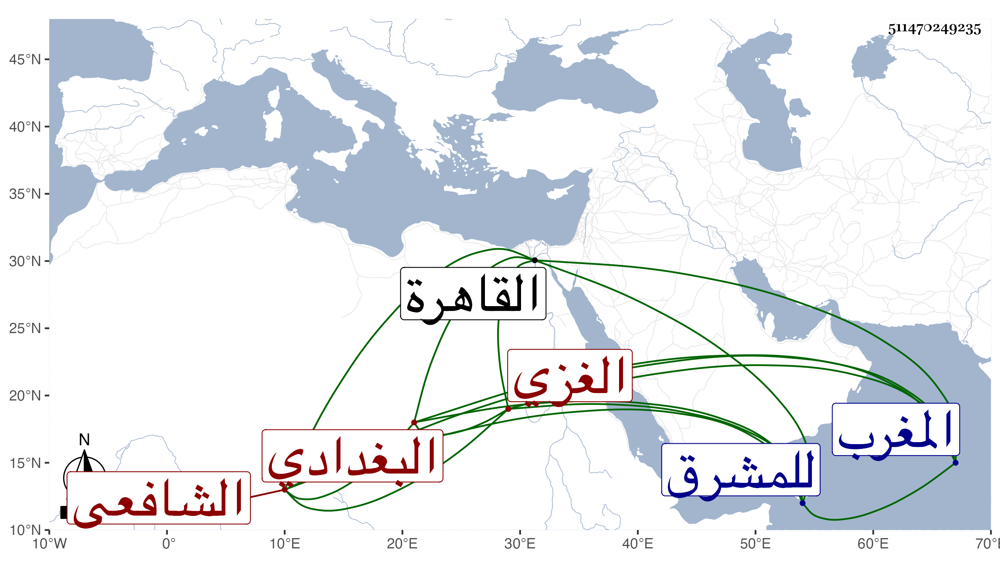

0902Sakhawi.DawLamic.ITO20230111-ara1.EIS1600.511470249235
Biography ID: 511470249235
796
علي بن عبد الرحمن بن حسن بن علي بن منصور بن علي العلاء أبو الحسن البغدادي الأصل الغزي الشافعي ويعرف بابن المشرقي نسبة للمشرق ضد المغرب . ممن أخذ عني بالقاهرة بل أخذ ببلده عن الشمس بن الحمصي وغيره وبرع وناب في قضائها ونظم الشعر مع عقل وسكون وكان قد عرض محافيظه علي في جملة الجماعة قبل السبعين ثم لازمني هو وأخوه بعد في الدروس وغيرها وأنشدني من نظمه كثيرا . ومن ذلك مرثية في الشرفي بن الجيعان وكتبها لي بخطه بل ومدحني بأبيات ، وهو ممن امتحن في الدولة القايتبائية . مات في ربيع الأول سنة تسع وثمانين وكان له مشهد حافل وكثر الأسف عليه ، ومولده كما قاله لي ولده الشمس محمد في سنة خمسين .
